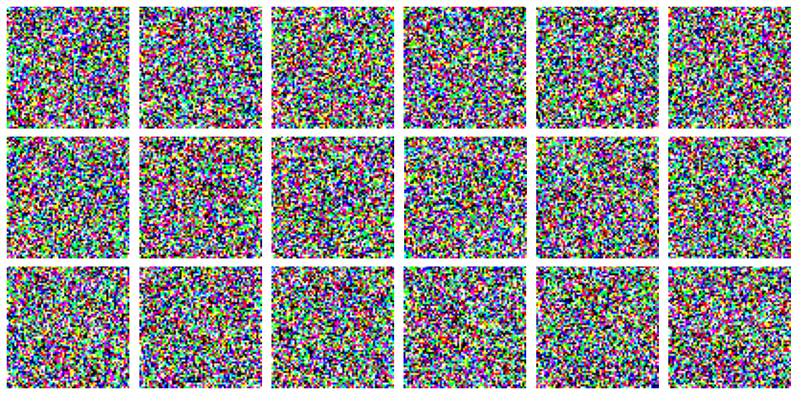
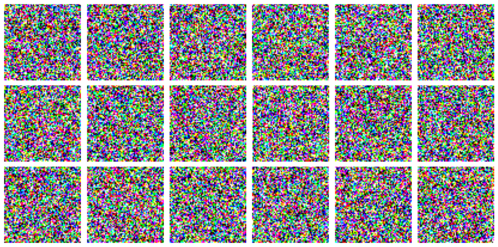

Denoising Diffusion Implicit Models
Author: András Béres
Date created: 2022/06/24
Last modified: 2022/06/24
Description: Generating images of flowers with denoising diffusion implicit models.

Introduction
What are diffusion models?
Recently, denoising diffusion models, including score-based generative models, gained popularity as a powerful class of generative models, that can rival even generative adversarial networks (GANs) in image synthesis quality. They tend to generate more diverse samples, while being stable to train and easy to scale. Recent large diffusion models, such as DALL-E 2 and Imagen, have shown incredible text-to-image generation capability. One of their drawbacks is however, that they are slower to sample from, because they require multiple forward passes for generating an image.
Diffusion refers to the process of turning a structured signal (an image) into noise step-by-step. By simulating diffusion, we can generate noisy images from our training images, and can train a neural network to try to denoise them. Using the trained network we can simulate the opposite of diffusion, reverse diffusion, which is the process of an image emerging from noise.

One-sentence summary: diffusion models are trained to denoise noisy images, and can generate images by iteratively denoising pure noise.
Goal of this example
This code example intends to be a minimal but feature-complete (with a generation quality metric) implementation of diffusion models, with modest compute requirements and reasonable performance. My implementation choices and hyperparameter tuning were done with these goals in mind.
Since currently the literature of diffusion models is mathematically quite complex with multiple theoretical frameworks (score matching, differential equations, Markov chains) and sometimes even conflicting notations (see Appendix C.2), it can be daunting trying to understand them. My view of these models in this example will be that they learn to separate a noisy image into its image and Gaussian noise components.
In this example I made effort to break down all long mathematical expressions into digestible pieces and gave all variables explanatory names. I also included numerous links to relevant literature to help interested readers dive deeper into the topic, in the hope that this code example will become a good starting point for practitioners learning about diffusion models.
In the following sections, we will implement a continuous time version of Denoising Diffusion Implicit Models (DDIMs) with deterministic sampling.
Setup
import os
os.environ["KERAS_BACKEND"] = "tensorflow"
import math
import matplotlib.pyplot as plt
import tensorflow as tf
import tensorflow_datasets as tfds
import keras
from keras import layers
from keras import ops
Hyperparameters
# data
dataset_name = "oxford_flowers102"
dataset_repetitions = 5
num_epochs = 1 # train for at least 50 epochs for good results
image_size = 64
# KID = Kernel Inception Distance, see related section
kid_image_size = 75
kid_diffusion_steps = 5
plot_diffusion_steps = 20
# sampling
min_signal_rate = 0.02
max_signal_rate = 0.95
# architecture
embedding_dims = 32
embedding_max_frequency = 1000.0
widths = [32, 64, 96, 128]
block_depth = 2
# optimization
batch_size = 64
ema = 0.999
learning_rate = 1e-3
weight_decay = 1e-4
Data pipeline
We will use the Oxford Flowers 102 dataset for generating images of flowers, which is a diverse natural dataset containing around 8,000 images. Unfortunately the official splits are imbalanced, as most of the images are contained in the test split. We create new splits (80% train, 20% validation) using the Tensorflow Datasets slicing API. We apply center crops as preprocessing, and repeat the dataset multiple times (reason given in the next section).
def preprocess_image(data):
# center crop image
height = ops.shape(data["image"])[0]
width = ops.shape(data["image"])[1]
crop_size = ops.minimum(height, width)
image = tf.image.crop_to_bounding_box(
data["image"],
(height - crop_size) // 2,
(width - crop_size) // 2,
crop_size,
crop_size,
)
# resize and clip
# for image downsampling it is important to turn on antialiasing
image = tf.image.resize(image, size=[image_size, image_size], antialias=True)
return ops.clip(image / 255.0, 0.0, 1.0)
def prepare_dataset(split):
# the validation dataset is shuffled as well, because data order matters
# for the KID estimation
return (
tfds.load(dataset_name, split=split, shuffle_files=True)
.map(preprocess_image, num_parallel_calls=tf.data.AUTOTUNE)
.cache()
.repeat(dataset_repetitions)
.shuffle(10 * batch_size)
.batch(batch_size, drop_remainder=True)
.prefetch(buffer_size=tf.data.AUTOTUNE)
)
# load dataset
train_dataset = prepare_dataset("train[:80%]+validation[:80%]+test[:80%]")
val_dataset = prepare_dataset("train[80%:]+validation[80%:]+test[80%:]")
Kernel inception distance
Kernel Inception Distance (KID) is an image quality metric which was proposed as a replacement for the popular Frechet Inception Distance (FID). I prefer KID to FID because it is simpler to implement, can be estimated per-batch, and is computationally lighter. More details here.
In this example, the images are evaluated at the minimal possible resolution of the Inception network (75x75 instead of 299x299), and the metric is only measured on the validation set for computational efficiency. We also limit the number of sampling steps at evaluation to 5 for the same reason.
Since the dataset is relatively small, we go over the train and validation splits multiple times per epoch, because the KID estimation is noisy and compute-intensive, so we want to evaluate only after many iterations, but for many iterations.
@keras.saving.register_keras_serializable()
class KID(keras.metrics.Metric):
def __init__(self, name, **kwargs):
super().__init__(name=name, **kwargs)
# KID is estimated per batch and is averaged across batches
self.kid_tracker = keras.metrics.Mean(name="kid_tracker")
# a pretrained InceptionV3 is used without its classification layer
# transform the pixel values to the 0-255 range, then use the same
# preprocessing as during pretraining
self.encoder = keras.Sequential(
[
keras.Input(shape=(image_size, image_size, 3)),
layers.Rescaling(255.0),
layers.Resizing(height=kid_image_size, width=kid_image_size),
layers.Lambda(keras.applications.inception_v3.preprocess_input),
keras.applications.InceptionV3(
include_top=False,
input_shape=(kid_image_size, kid_image_size, 3),
weights="imagenet",
),
layers.GlobalAveragePooling2D(),
],
name="inception_encoder",
)
def polynomial_kernel(self, features_1, features_2):
feature_dimensions = ops.cast(ops.shape(features_1)[1], dtype="float32")
return (
features_1 @ ops.transpose(features_2) / feature_dimensions + 1.0
) ** 3.0
def update_state(self, real_images, generated_images, sample_weight=None):
real_features = self.encoder(real_images, training=False)
generated_features = self.encoder(generated_images, training=False)
# compute polynomial kernels using the two sets of features
kernel_real = self.polynomial_kernel(real_features, real_features)
kernel_generated = self.polynomial_kernel(
generated_features, generated_features
)
kernel_cross = self.polynomial_kernel(real_features, generated_features)
# estimate the squared maximum mean discrepancy using the average kernel values
batch_size = real_features.shape[0]
batch_size_f = ops.cast(batch_size, dtype="float32")
mean_kernel_real = ops.sum(kernel_real * (1.0 - ops.eye(batch_size))) / (
batch_size_f * (batch_size_f - 1.0)
)
mean_kernel_generated = ops.sum(
kernel_generated * (1.0 - ops.eye(batch_size))
) / (batch_size_f * (batch_size_f - 1.0))
mean_kernel_cross = ops.mean(kernel_cross)
kid = mean_kernel_real + mean_kernel_generated - 2.0 * mean_kernel_cross
# update the average KID estimate
self.kid_tracker.update_state(kid)
def result(self):
return self.kid_tracker.result()
def reset_state(self):
self.kid_tracker.reset_state()
Network architecture
Here we specify the architecture of the neural network that we will use for denoising. We build a U-Net with identical input and output dimensions. U-Net is a popular semantic segmentation architecture, whose main idea is that it progressively downsamples and then upsamples its input image, and adds skip connections between layers having the same resolution. These help with gradient flow and avoid introducing a representation bottleneck, unlike usual autoencoders. Based on this, one can view diffusion models as denoising autoencoders without a bottleneck.
The network takes two inputs, the noisy images and the variances of their noise components. The latter is required since denoising a signal requires different operations at different levels of noise. We transform the noise variances using sinusoidal embeddings, similarly to positional encodings used both in transformers and NeRF. This helps the network to be highly sensitive to the noise level, which is crucial for good performance. We implement sinusoidal embeddings using a Lambda layer.
Some other considerations:
- We build the network using the Keras Functional API, and use closures to build blocks of layers in a consistent style.
- Diffusion models embed the index of the timestep of the diffusion process instead of the noise variance, while score-based models (Table 1) usually use some function of the noise level. I prefer the latter so that we can change the sampling schedule at inference time, without retraining the network.
- Diffusion models input the embedding to each convolution block separately. We only input it at the start of the network for simplicity, which in my experience barely decreases performance, because the skip and residual connections help the information propagate through the network properly.
- In the literature it is common to use attention layers at lower resolutions for better global coherence. I omitted it for simplicity.
- We disable the learnable center and scale parameters of the batch normalization layers, since the following convolution layers make them redundant.
- We initialize the last convolution's kernel to all zeros as a good practice, making the network predict only zeros after initialization, which is the mean of its targets. This will improve behaviour at the start of training and make the mean squared error loss start at exactly 1.
@keras.saving.register_keras_serializable()
def sinusoidal_embedding(x):
embedding_min_frequency = 1.0
frequencies = ops.exp(
ops.linspace(
ops.log(embedding_min_frequency),
ops.log(embedding_max_frequency),
embedding_dims // 2,
)
)
angular_speeds = ops.cast(2.0 * math.pi * frequencies, "float32")
embeddings = ops.concatenate(
[ops.sin(angular_speeds * x), ops.cos(angular_speeds * x)], axis=3
)
return embeddings
def ResidualBlock(width):
def apply(x):
input_width = x.shape[3]
if input_width == width:
residual = x
else:
residual = layers.Conv2D(width, kernel_size=1)(x)
x = layers.BatchNormalization(center=False, scale=False)(x)
x = layers.Conv2D(width, kernel_size=3, padding="same", activation="swish")(x)
x = layers.Conv2D(width, kernel_size=3, padding="same")(x)
x = layers.Add()([x, residual])
return x
return apply
def DownBlock(width, block_depth):
def apply(x):
x, skips = x
for _ in range(block_depth):
x = ResidualBlock(width)(x)
skips.append(x)
x = layers.AveragePooling2D(pool_size=2)(x)
return x
return apply
def UpBlock(width, block_depth):
def apply(x):
x, skips = x
x = layers.UpSampling2D(size=2, interpolation="bilinear")(x)
for _ in range(block_depth):
x = layers.Concatenate()([x, skips.pop()])
x = ResidualBlock(width)(x)
return x
return apply
def get_network(image_size, widths, block_depth):
noisy_images = keras.Input(shape=(image_size, image_size, 3))
noise_variances = keras.Input(shape=(1, 1, 1))
e = layers.Lambda(sinusoidal_embedding, output_shape=(1, 1, 32))(noise_variances)
e = layers.UpSampling2D(size=image_size, interpolation="nearest")(e)
x = layers.Conv2D(widths[0], kernel_size=1)(noisy_images)
x = layers.Concatenate()([x, e])
skips = []
for width in widths[:-1]:
x = DownBlock(width, block_depth)([x, skips])
for _ in range(block_depth):
x = ResidualBlock(widths[-1])(x)
for width in reversed(widths[:-1]):
x = UpBlock(width, block_depth)([x, skips])
x = layers.Conv2D(3, kernel_size=1, kernel_initializer="zeros")(x)
return keras.Model([noisy_images, noise_variances], x, name="residual_unet")
This showcases the power of the Functional API. Note how we built a relatively complex U-Net with skip connections, residual blocks, multiple inputs, and sinusoidal embeddings in 80 lines of code!
Diffusion model
Diffusion schedule
Let us say, that a diffusion process starts at time = 0, and ends at time = 1. This variable will be called diffusion time, and can be either discrete (common in diffusion models) or continuous (common in score-based models). I choose the latter, so that the number of sampling steps can be changed at inference time.
We need to have a function that tells us at each point in the diffusion process the noise
levels and signal levels of the noisy image corresponding to the actual diffusion time.
This will be called the diffusion schedule (see diffusion_schedule()).
This schedule outputs two quantities: the noise_rate and the signal_rate
(corresponding to sqrt(1 - alpha) and sqrt(alpha) in the DDIM paper, respectively). We
generate the noisy image by weighting the random noise and the training image by their
corresponding rates and adding them together.
Since the (standard normal) random noises and the (normalized) images both have zero mean and unit variance, the noise rate and signal rate can be interpreted as the standard deviation of their components in the noisy image, while the squares of their rates can be interpreted as their variance (or their power in the signal processing sense). The rates will always be set so that their squared sum is 1, meaning that the noisy images will always have unit variance, just like its unscaled components.
We will use a simplified, continuous version of the cosine schedule (Section 3.2), that is quite commonly used in the literature. This schedule is symmetric, slow towards the start and end of the diffusion process, and it also has a nice geometric interpretation, using the trigonometric properties of the unit circle:
{kind=link}

Training process
The training procedure (see train_step() and denoise()) of denoising diffusion models
is the following: we sample random diffusion times uniformly, and mix the training images
with random gaussian noises at rates corresponding to the diffusion times. Then, we train
the model to separate the noisy image to its two components.
Usually, the neural network is trained to predict the unscaled noise component, from which the predicted image component can be calculated using the signal and noise rates. Pixelwise mean squared error should be used theoretically, however I recommend using mean absolute error instead (similarly to this implementation), which produces better results on this dataset.
Sampling (reverse diffusion)
When sampling (see reverse_diffusion()), at each step we take the previous estimate of
the noisy image and separate it into image and noise using our network. Then we recombine
these components using the signal and noise rate of the following step.
Though a similar view is shown in Equation 12 of DDIMs, I believe the above explanation of the sampling equation is not widely known.
This example only implements the deterministic sampling procedure from DDIM, which corresponds to eta = 0 in the paper. One can also use stochastic sampling (in which case the model becomes a Denoising Diffusion Probabilistic Model (DDPM)), where a part of the predicted noise is replaced with the same or larger amount of random noise (see Equation 16 and below).
Stochastic sampling can be used without retraining the network (since both models are trained the same way), and it can improve sample quality, while on the other hand requiring more sampling steps usually.
@keras.saving.register_keras_serializable()
class DiffusionModel(keras.Model):
def __init__(self, image_size, widths, block_depth):
super().__init__()
self.normalizer = layers.Normalization()
self.network = get_network(image_size, widths, block_depth)
self.ema_network = keras.models.clone_model(self.network)
def compile(self, **kwargs):
super().compile(**kwargs)
self.noise_loss_tracker = keras.metrics.Mean(name="n_loss")
self.image_loss_tracker = keras.metrics.Mean(name="i_loss")
self.kid = KID(name="kid")
@property
def metrics(self):
return [self.noise_loss_tracker, self.image_loss_tracker, self.kid]
def denormalize(self, images):
# convert the pixel values back to 0-1 range
images = self.normalizer.mean + images * self.normalizer.variance**0.5
return ops.clip(images, 0.0, 1.0)
def diffusion_schedule(self, diffusion_times):
# diffusion times -> angles
start_angle = ops.cast(ops.arccos(max_signal_rate), "float32")
end_angle = ops.cast(ops.arccos(min_signal_rate), "float32")
diffusion_angles = start_angle + diffusion_times * (end_angle - start_angle)
# angles -> signal and noise rates
signal_rates = ops.cos(diffusion_angles)
noise_rates = ops.sin(diffusion_angles)
# note that their squared sum is always: sin^2(x) + cos^2(x) = 1
return noise_rates, signal_rates
def denoise(self, noisy_images, noise_rates, signal_rates, training):
# the exponential moving average weights are used at evaluation
if training:
network = self.network
else:
network = self.ema_network
# predict noise component and calculate the image component using it
pred_noises = network([noisy_images, noise_rates**2], training=training)
pred_images = (noisy_images - noise_rates * pred_noises) / signal_rates
return pred_noises, pred_images
def reverse_diffusion(self, initial_noise, diffusion_steps):
# reverse diffusion = sampling
num_images = initial_noise.shape[0]
step_size = 1.0 / diffusion_steps
# important line:
# at the first sampling step, the "noisy image" is pure noise
# but its signal rate is assumed to be nonzero (min_signal_rate)
next_noisy_images = initial_noise
for step in range(diffusion_steps):
noisy_images = next_noisy_images
# separate the current noisy image to its components
diffusion_times = ops.ones((num_images, 1, 1, 1)) - step * step_size
noise_rates, signal_rates = self.diffusion_schedule(diffusion_times)
pred_noises, pred_images = self.denoise(
noisy_images, noise_rates, signal_rates, training=False
)
# network used in eval mode
# remix the predicted components using the next signal and noise rates
next_diffusion_times = diffusion_times - step_size
next_noise_rates, next_signal_rates = self.diffusion_schedule(
next_diffusion_times
)
next_noisy_images = (
next_signal_rates * pred_images + next_noise_rates * pred_noises
)
# this new noisy image will be used in the next step
return pred_images
def generate(self, num_images, diffusion_steps):
# noise -> images -> denormalized images
initial_noise = keras.random.normal(
shape=(num_images, image_size, image_size, 3)
)
generated_images = self.reverse_diffusion(initial_noise, diffusion_steps)
generated_images = self.denormalize(generated_images)
return generated_images
def train_step(self, images):
# normalize images to have standard deviation of 1, like the noises
images = self.normalizer(images, training=True)
noises = keras.random.normal(shape=(batch_size, image_size, image_size, 3))
# sample uniform random diffusion times
diffusion_times = keras.random.uniform(
shape=(batch_size, 1, 1, 1), minval=0.0, maxval=1.0
)
noise_rates, signal_rates = self.diffusion_schedule(diffusion_times)
# mix the images with noises accordingly
noisy_images = signal_rates * images + noise_rates * noises
with tf.GradientTape() as tape:
# train the network to separate noisy images to their components
pred_noises, pred_images = self.denoise(
noisy_images, noise_rates, signal_rates, training=True
)
noise_loss = self.loss(noises, pred_noises) # used for training
image_loss = self.loss(images, pred_images) # only used as metric
gradients = tape.gradient(noise_loss, self.network.trainable_weights)
self.optimizer.apply_gradients(zip(gradients, self.network.trainable_weights))
self.noise_loss_tracker.update_state(noise_loss)
self.image_loss_tracker.update_state(image_loss)
# track the exponential moving averages of weights
for weight, ema_weight in zip(self.network.weights, self.ema_network.weights):
ema_weight.assign(ema * ema_weight + (1 - ema) * weight)
# KID is not measured during the training phase for computational efficiency
return {m.name: m.result() for m in self.metrics[:-1]}
def test_step(self, images):
# normalize images to have standard deviation of 1, like the noises
images = self.normalizer(images, training=False)
noises = keras.random.normal(shape=(batch_size, image_size, image_size, 3))
# sample uniform random diffusion times
diffusion_times = keras.random.uniform(
shape=(batch_size, 1, 1, 1), minval=0.0, maxval=1.0
)
noise_rates, signal_rates = self.diffusion_schedule(diffusion_times)
# mix the images with noises accordingly
noisy_images = signal_rates * images + noise_rates * noises
# use the network to separate noisy images to their components
pred_noises, pred_images = self.denoise(
noisy_images, noise_rates, signal_rates, training=False
)
noise_loss = self.loss(noises, pred_noises)
image_loss = self.loss(images, pred_images)
self.image_loss_tracker.update_state(image_loss)
self.noise_loss_tracker.update_state(noise_loss)
# measure KID between real and generated images
# this is computationally demanding, kid_diffusion_steps has to be small
images = self.denormalize(images)
generated_images = self.generate(
num_images=batch_size, diffusion_steps=kid_diffusion_steps
)
self.kid.update_state(images, generated_images)
return {m.name: m.result() for m in self.metrics}
def plot_images(self, epoch=None, logs=None, num_rows=3, num_cols=6):
# plot random generated images for visual evaluation of generation quality
generated_images = self.generate(
num_images=num_rows * num_cols,
diffusion_steps=plot_diffusion_steps,
)
plt.figure(figsize=(num_cols * 2.0, num_rows * 2.0))
for row in range(num_rows):
for col in range(num_cols):
index = row * num_cols + col
plt.subplot(num_rows, num_cols, index + 1)
plt.imshow(generated_images[index])
plt.axis("off")
plt.tight_layout()
plt.show()
plt.close()
Training
# create and compile the model
model = DiffusionModel(image_size, widths, block_depth)
# below tensorflow 2.9:
# pip install tensorflow_addons
# import tensorflow_addons as tfa
# optimizer=tfa.optimizers.AdamW
model.compile(
optimizer=keras.optimizers.AdamW(
learning_rate=learning_rate, weight_decay=weight_decay
),
loss=keras.losses.mean_absolute_error,
)
# pixelwise mean absolute error is used as loss
# save the best model based on the validation KID metric
checkpoint_path = "checkpoints/diffusion_model.weights.h5"
checkpoint_callback = keras.callbacks.ModelCheckpoint(
filepath=checkpoint_path,
save_weights_only=True,
monitor="val_kid",
mode="min",
save_best_only=True,
)
# calculate mean and variance of training dataset for normalization
model.normalizer.adapt(train_dataset)
# run training and plot generated images periodically
model.fit(
train_dataset,
epochs=num_epochs,
validation_data=val_dataset,
callbacks=[
keras.callbacks.LambdaCallback(on_epoch_end=model.plot_images),
checkpoint_callback,
],
)
Downloading data from https://storage.googleapis.com/tensorflow/keras-applications/inception_v3/inception_v3_weights_tf_dim_ordering_tf_kernels_notop.h5
87910968/87910968 ━━━━━━━━━━━━━━━━━━━━ 0s 0us/step
511/511 ━━━━━━━━━━━━━━━━━━━━ 0s 48ms/step - i_loss: 0.6896 - n_loss: 0.2961

511/511 ━━━━━━━━━━━━━━━━━━━━ 110s 138ms/step - i_loss: 0.6891 - n_loss: 0.2959 - kid: 0.0000e+00 - val_i_loss: 2.5650 - val_kid: 2.0372 - val_n_loss: 0.7914
<keras.src.callbacks.history.History at 0x7f521b149870>
Inference
# load the best model and generate images
model.load_weights(checkpoint_path)
model.plot_images()

Results
By running the training for at least 50 epochs (takes 2 hours on a T4 GPU and 30 minutes on an A100 GPU), one can get high quality image generations using this code example.
The evolution of a batch of images over a 80 epoch training (color artifacts are due to GIF compression):

Images generated using between 1 and 20 sampling steps from the same initial noise:

Interpolation (spherical) between initial noise samples:

Deterministic sampling process (noisy images on top, predicted images on bottom, 40 steps):

Stochastic sampling process (noisy images on top, predicted images on bottom, 80 steps):

Lessons learned
During preparation for this code example I have run numerous experiments using this repository. In this section I list the lessons learned and my recommendations in my subjective order of importance.
Algorithmic tips
- min. and max. signal rates: I found the min. signal rate to be an important hyperparameter. Setting it too low will make the generated images oversaturated, while setting it too high will make them undersaturated. I recommend tuning it carefully. Also, setting it to 0 will lead to a division by zero error. The max. signal rate can be set to 1, but I found that setting it lower slightly improves generation quality.
- loss function: While large models tend to use mean squared error (MSE) loss, I recommend using mean absolute error (MAE) on this dataset. In my experience MSE loss generates more diverse samples (it also seems to hallucinate more Section 3), while MAE loss leads to smoother images. I recommend trying both.
- weight decay: I did occasionally run into diverged trainings when scaling up the model, and found that weight decay helps in avoiding instabilities at a low performance cost. This is why I use AdamW instead of Adam in this example.
- exponential moving average of weights: This helps to reduce the variance of the KID metric, and helps in averaging out short-term changes during training.
- image augmentations: Though I did not use image augmentations in this example, in my experience adding horizontal flips to the training increases generation performance, while random crops do not. Since we use a supervised denoising loss, overfitting can be an issue, so image augmentations might be important on small datasets. One should also be careful not to use leaky augmentations, which can be done following this method (end of Section 5) for instance.
- data normalization: In the literature the pixel values of images are usually converted to the -1 to 1 range. For theoretical correctness, I normalize the images to have zero mean and unit variance instead, exactly like the random noises.
- noise level input: I chose to input the noise variance to the network, as it is symmetrical under our sampling schedule. One could also input the noise rate (similar performance), the signal rate (lower performance), or even the log-signal-to-noise ratio (Appendix B.1) (did not try, as its range is highly dependent on the min. and max. signal rates, and would require adjusting the min. embedding frequency accordingly).
- gradient clipping: Using global gradient clipping with a value of 1 can help with training stability for large models, but decreased performance significantly in my experience.
- residual connection downscaling: For deeper models (Appendix B), scaling the residual connections with 1/sqrt(2) can be helpful, but did not help in my case.
- learning rate: For me, Adam optimizer's default learning rate of 1e-3 worked very well, but lower learning rates are more common in the literature (Tables 11-13).
Architectural tips
- sinusoidal embedding: Using sinusoidal embeddings on the noise level input of the network is crucial for good performance. I recommend setting the min. embedding frequency to the reciprocal of the range of this input, and since we use the noise variance in this example, it can be left always at 1. The max. embedding frequency controls the smallest change in the noise variance that the network will be sensitive to, and the embedding dimensions set the number of frequency components in the embedding. In my experience the performance is not too sensitive to these values.
- skip connections: Using skip connections in the network architecture is absolutely critical, without them the model will fail to learn to denoise at a good performance.
- residual connections: In my experience residual connections also significantly improve performance, but this might be due to the fact that we only input the noise level embeddings to the first layer of the network instead of to all of them.
- normalization: When scaling up the model, I did occasionally encounter diverged trainings, using normalization layers helped to mitigate this issue. In the literature it is common to use GroupNormalization (with 8 groups for example) or LayerNormalization in the network, I however chose to use BatchNormalization, as it gave similar benefits in my experiments but was computationally lighter.
- activations: The choice of activation functions had a larger effect on generation quality than I expected. In my experiments using non-monotonic activation functions outperformed monotonic ones (such as ReLU), with Swish performing the best (this is also what Imagen uses, page 41).
- attention: As mentioned earlier, it is common in the literature to use attention layers at low resolutions for better global coherence. I omitted them for simplicity.
- upsampling: Bilinear and nearest neighbour upsampling in the network performed similarly, however I did not try transposed convolutions.
For a similar list about GANs check out this Keras tutorial.
What to try next?
If you would like to dive in deeper to the topic, I recommend checking out this repository that I created in preparation for this code example, which implements a wider range of features in a similar style, such as:
- stochastic sampling
- second-order sampling based on the differential equation view of DDIMs (Equation 13)
- more diffusion schedules
- more network output types: predicting image or velocity (Appendix D) instead of noise
- more datasets
Related works
- Score-based generative modeling (blogpost)
- What are diffusion models? (blogpost)
- Annotated diffusion model (blogpost)
- CVPR 2022 tutorial on diffusion models (slides available)
- Elucidating the Design Space of Diffusion-Based Generative Models: attempts unifying diffusion methods under a common framework
- High-level video overviews: 1, 2
- Detailed technical videos: 1, 2
- Score-based generative models: NCSN, NCSN+, NCSN++
- Denoising diffusion models: DDPM, DDIM, DDPM+, DDPM++
- Large diffusion models: GLIDE, DALL-E 2, Imagen